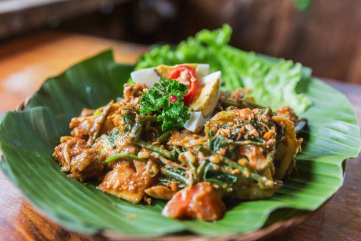
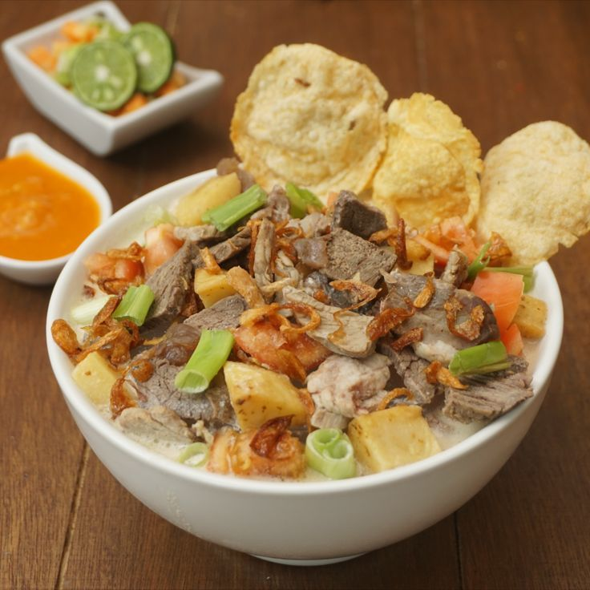
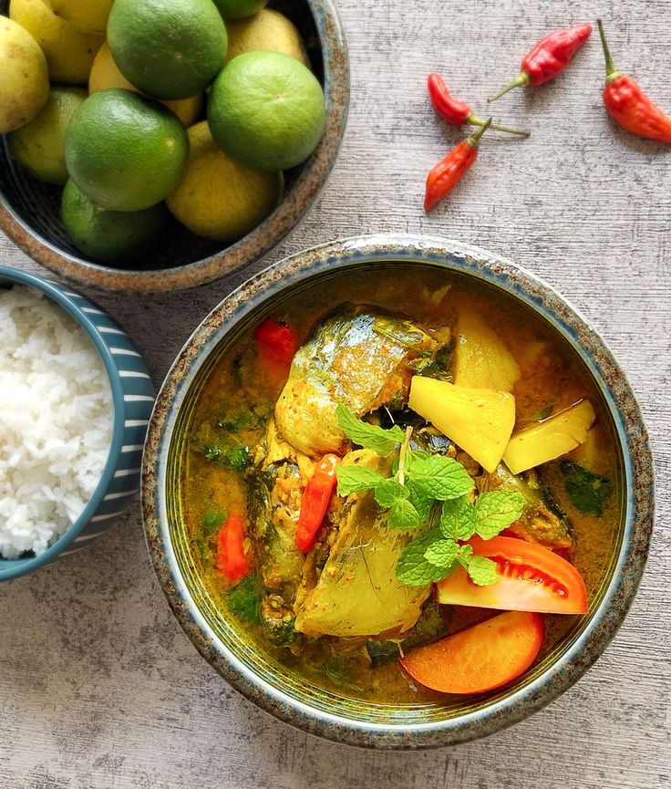
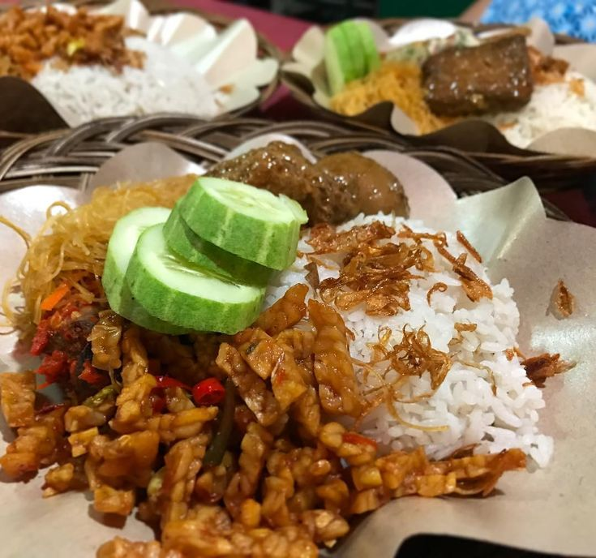
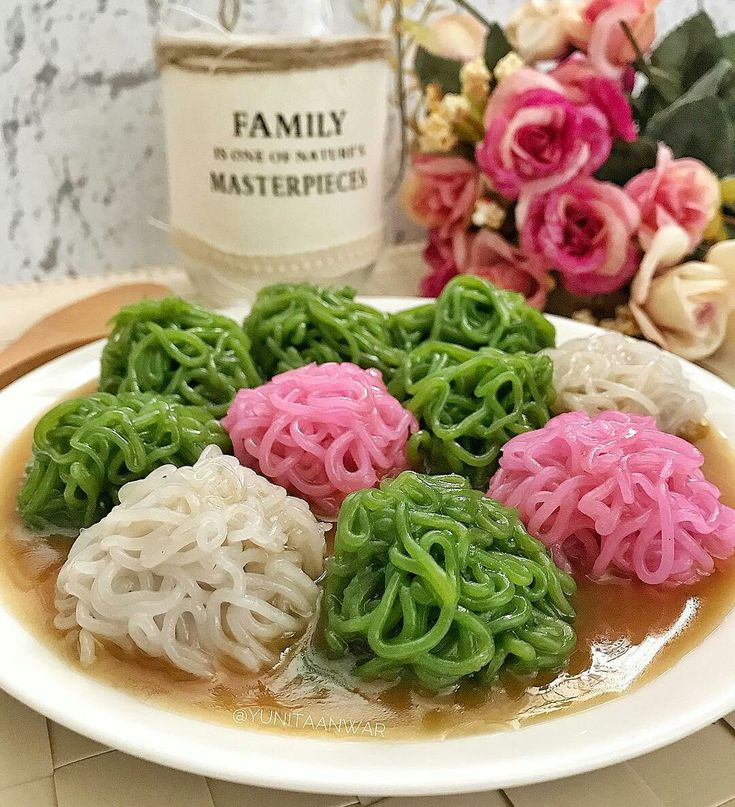
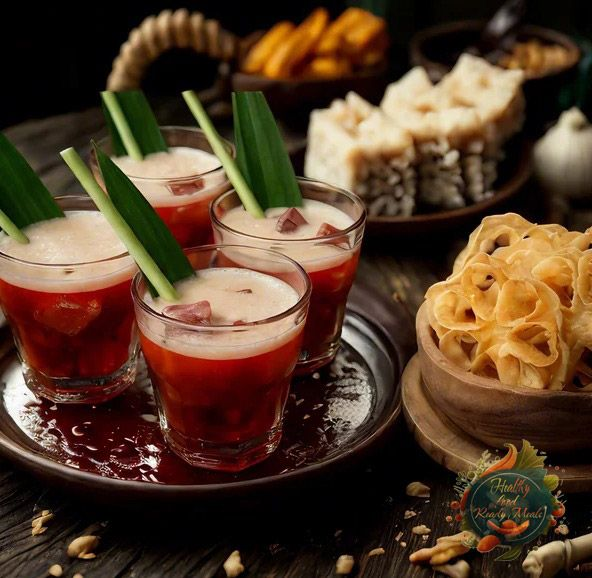

Makanan Khas Jakarta |
|
|
 Gado-Gado BetawiGado-gado Betawi adalah salah satu kuliner tradisional legendaris khas Jakarta (Batavia) yang berasal dari tahun 1800-an dan sering disebut sebagai "salad khas Indonesia"  Soto BetawiSoto Betawi adalah kuliner khas Jakarta yang terkenal dengan kuah santan atau susu yang gurih, kental, dan kaya rempah  PindangPindang Betawi adalah hidangan ikan bandeng kuah kaya rempah khas Betawi dengan rasa gurih, manis, asam, dan segar,  Nasi Uduk BetawiNasi uduk Betawi adalah hidangan nasi gurih khas Jakarta yang dimasak dengan santan, daun salam, serai, dan rempah lainnya, menghasilkan aroma harum dan rasa lezat  Putu MayangPutu mayang adalah kue tradisional Indonesia, khas Betawi, berbentuk seperti mie berwarna-warni yang terbuat dari tepung beras atau tapioka, disajikan dengan kuah santan kental dan kinca gula merah cair yang manis gurih, menciptakan perpaduan rasa lembut, kenyal, manis, dan gurih  Bir PletokBir pletok adalah minuman tradisional Betawi penghangat badan tanpa alkohol, terbuat dari campuran rempah seperti jahe, serai, pandan, dan kayu secang yang memberikan warna merah alami, tercipta sebagai alternatif "bir" halal dari pengaruh penjajah Belanda. |